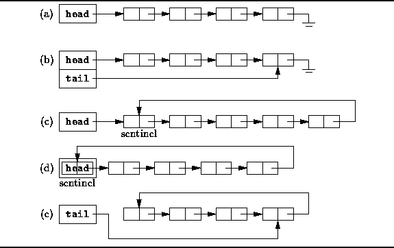
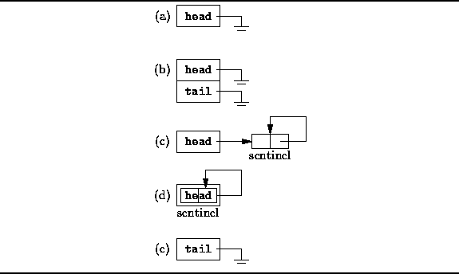

Data Structures and Algorithms
with Object-Oriented Design Patterns in C++
Data Structures and Algorithms
with Object-Oriented Design Patterns in C++
The singly-linked list is the most basic of
all the pointer-based data structures.
A singly-linked list is simply a sequence of dynamically allocated
storage elements,
each containing a pointer to its successor.
Despite this obvious simplicity,
there are myriad implementation variations.
Figure  shows several of the most common
singly-linked list variants.
shows several of the most common
singly-linked list variants.

Figure: Singly-Linked List Variations
The basic singly-linked list is shown in Figure (a).
Each element of the list contains a pointer to its successor;
the last element contains a null pointer.
A pointer to the first element of the list,
labeled head in Figure (a),
is used to keep track of the list.
The basic singly-linked list is inefficient in those cases when we wish to add elements to both ends of the list. While it is easy to add elements at the head of the list, to add elements at the other end (the tail ) we need to locate the last element. If the basic basic singly-linked list is used, the entire list needs to be traversed in order to find its tail.
Figure (b) shows
a way in which to make adding elements to the tail of a list more efficient.
The solution is to keep a second pointer, tail ,
which points to the last element of the list.
Of course, this time efficiency comes at the cost of the additional space
used to store the tail pointer.
The singly-linked lists labeled (c) and (d)
in Figure illustrate two common programming tricks.
The list (c) has an extra element at the head of the list
called a sentinel .
This element is never used to hold data
and it is always present.
The principal advantage of using a sentinel is that
it simplifies the programming of certain operations.
E.g., since there is always a sentinel standing guard,
we never need to modify the head pointer.
Of course, the disadvantage of a sentinel such as that shown in (c)
is that extra space is required,
and the sentinel needs to be created when the list is initialized.
The list (c) is also a circular list . Instead of using a null pointer to demarcate the end of the list, the pointer in the last element points to the sentinel. The advantage of this programming trick is that insertion at the head of the list, insertion at the tail of the list, and insertion at an arbitrary position of the list are all identical operations.
Figure (d) shows a variation of a singly-linked
list using a sentinel in which
instead of keeping a pointer to the sentinel,
the sentinel itself serves as the handle for the list.
This variant eliminates the need to allocate storage
for the sentinel separately.
Of course, it is also possible to make a circular, singly-linked list
that does not use a sentinel.
Figure (e) shows a variation in which
a single pointer is used to keep track of the list,
but this time the pointer, tail,
points to the last element of the list.
Since the list is circular in this case,
the first element follows the last element of the list.
Therefore, it is relatively simple to insert both
at the head and at the tail of this list.
This variation minimizes the storage required,
at the expense of a little extra time for certain operations.
Figure illustrates how the empty list
(i.e., the list containing no list elements)
is represented for each of the variations given in Figure .
Notice that the sentinel is always present
in those list variants which use it.
On the other hand,
in the list variants which do not use a sentinel,
null pointers are used to indicate the empty list.

Figure: Empty Singly-Linked Lists
The list variant (b) introduces a potential source of very subtle programming errors. A conservative programmer would insist that both the head and tail pointers must be null. However, a clever programmer might realize that it is sufficient require only that the head pointer be null in the case of an empty list. Since, the tail pointer is not used when the list is empty, its value may be left undefined. Of course, if that is the case, extreme care must be taken to ensure that the tail pointer is never used when the head pointer is null.
In the following sections, we will present the implementation details of a generic singly-linked list. We have chosen to present variation (b)--the one which uses a head and a tail pointer--since is supports append and prepend operations efficiently. While linked lists which use a sentinel do present some interesting time efficiencies, we have chosen not to use a sentinel because the use of a sentinel is essentially a programming trick. Also, from an object-oriented perspective, the use of a sentinel introduces some semantic difficulties. E.g., if each element of the list contains an object of type T, and we create a list to hold exactly n elements, it might be reasonable to expect that T's constructor is called only n times. However, when using a sentinel n+1 objects of type T are actually created--the extra one being the sentinel itself. Thus, the constructor of T objects is called n+1 times which may not be at all what the programmer expects.
 Copyright © 1997 by Bruno R. Preiss, P.Eng. All rights reserved.
Copyright © 1997 by Bruno R. Preiss, P.Eng. All rights reserved.